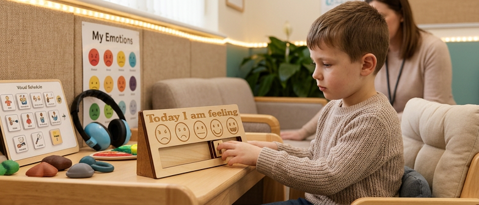
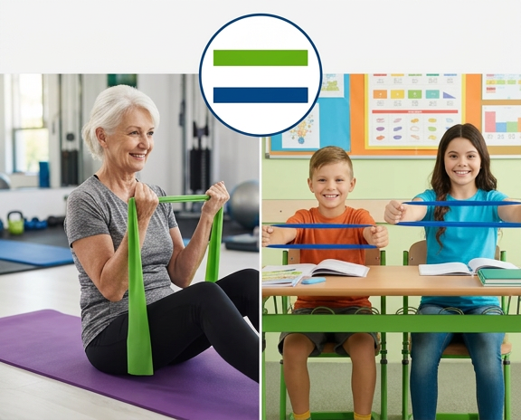

Where Everyone Belongs
Where Everyone Belongs
Thoughtfully chosen sensory tools for calm, focus, comfort, exploration and everyday moments when a little extra support can make a difference.
Whether you're looking for yourself, your child, a student, a family member or someone you care for, you're welcome here. You don't need to know exactly what you're looking for.
Explore our collectionsNot sure where to start? Just ask. We're happy to help.
Open Your Senses started with my son.
He has Asperger's, and school was incredibly difficult for him.
For years, I felt like I was trying to explain something that nobody was really hearing.
I repeatedly asked for him to be assessed because I could see that he was struggling. But again and again, I was told that he didn't meet the criteria.
Three long years later, we finally had an answer: Asperger's.
An answer didn't suddenly make everything easy, but it helped us understand him.
We worked hard to find the right educational setting and, along the way, began discovering the things that could help him feel more comfortable, regulated and able to navigate the world around him.
But there was another problem.
Finding the right sensory tools wasn't easy.
There were so many products, different websites and so much information to work through. It was difficult to know what might genuinely be useful, what might suit his needs and where to begin.
My son is now an adult.
But I haven't forgotten how it felt to be the parent searching for answers, trying to find something — anything — that might make life a little easier.
That's why I created Open Your Senses.
I wanted to create the place I wish I'd had back then.
A place where parents, carers, teachers, professionals and individuals can explore sensory tools and ideas without feeling overwhelmed.
A place where you don't have to be an expert.
A place where different needs are understood and respected.
And a place where someone can simply say:
“I'm not sure what I need. Can you help me?”
And the answer is:
“Of course.”
Because sensory needs don't belong to one age, one diagnosis or one type of person. We all experience the world through our senses.
From babies discovering the world around them, to children finding ways to feel comfortable and focused, adults looking for comfort or concentration, and older people enjoying familiar sights, sounds, textures and memories — there are so many ways our senses can support everyday life.
I can't promise that we'll have the perfect answer for everyone. What I can promise is that Open Your Senses will always start with the person, not the label.
Because everyone deserves to be heard.

A thoughtfully chosen collection of simple sensory tools for quiet focus, hands-on exploration and moments when a little extra sensory support may be helpful.
Why you might like it: A simple, silent way to see time passing without relying on a ticking clock or an alarm.
How it can be used: Useful at home, in classrooms or care settings when seeing time pass may make transitions feel more predictable.
Why you might like it: A discreet chewable topper designed to fit onto a pencil, offering an alternative to chewing on clothing, fingers or other objects.
How it can be used: Handy for school, homework or quiet activities when someone finds a chewable sensory option helpful.
Why you might like it: A soft, squeezable texture that gives the hands something comfortable to do when someone needs movement or tactile input.
How it can be used: Suitable for quiet moments at home, school or care settings. Everyone responds differently, so simply see whether the texture feels comfortable and useful.
Why you might like it: A hands-on activity offering resistance and tactile feedback for squeezing, stretching and manipulating.
How it can be used: Useful for hands-on play, quiet fidgeting and fine-motor activities. It can also simply be an enjoyable way to keep hands busy.
Why you might like it: Adds scent to an everyday activity, giving the senses another way to explore and engage.
How it can be used: A fun addition to reading and sensory activities. Familiar scents may also prompt memories or conversation for some people, although responses to scent are very individual.

A carefully chosen collection of sensory tools for moments when someone may benefit from quieter, more grounding activities and a change of sensory focus.
Why you might like it: The slow movement and changing colours offer something simple and interesting to watch.
How it can be used: A lovely option for quiet corners, sensory breaks or relaxed visual exploration. It may be particularly appealing where simple, non-verbal activities are preferred.
Why you might like it: Creates a clear, gentle sound that can become part of a calming routine or simply an enjoyable listening activity.
How it can be used: Try it as part of a quiet routine, listening activity or transition. Keep the sound comfortable for the person using it, particularly if they are sensitive to noise.
Why you might like it: Offers firm tactile input for people who enjoy predictable touch and pressure.
How it can be used: Some people enjoy firm, predictable sensory input before or during everyday activities. This type of tool isn't suitable for everyone, so follow the manufacturer's guidance and stop if it feels uncomfortable.
Why you might like it: Combines hands-on stretching and moulding with a pleasant scent for a multi-sensory activity.
How it can be used: A fun hands-on activity for quiet play, sensory exploration or keeping hands busy.
Why you might like it: A flexible, satisfying pocket companion lined with distinct surface textures and click-free pop elements for continuous tracking.
How it helps: Perfect for a pocket or sensory bag. It gives immediate tactile sensory satisfaction during bus rides, doctor visits, or waiting rooms, serving as an effective protective buffer against environmental overload.

A collection rich in textures, lights, and sounds, beautifully designed to prompt curiosity, assist tracking, and bring absolute joy to early sensory learners and older adults alike.
Why you might like it: Emits a soft, safe, glowing spray of lights that can be safely held and watched up close, creating gentle stimulation without glare.
How it helps: Captivates visual attention for young sensory explorers tracking movement. In senior care settings, the changing fibers offer a warm, soothing visual focus that brings comfort and calm to darker evening hours.
Why you might like it: Combines a slow visual cascade of colorful beads with the realistic acoustic trickle sound of gentle rain when inverted.
How it helps: Great for sensory play, visual exploration and quiet activities. Some people may also enjoy the familiar rain-like sound and gentle movement.
Why you might like it: Delivers high-contrast visual and distinct physical feedback as fingers glide across the surface to flip the shifting sequin colors.
How it helps: Keeps busy hands occupied at home for hours. For older adults experiencing agitation or dementia, running hands along the scales satisfies tactile patterns, reduces repetitive plucking behaviors, and anchors focus.
Why you might like it: Features a raised block texture with a safe breakaway cord lanyard, giving substantial oral resistance safely away from clothing layers.
How it helps: Offers a reliable oral outlet for school children during intensive tasks, while acting as a grounding weight around the neck to help organize spatial body awareness.
Why you might like it: Pairs clean, highly-stretchable physical dough handling with two intense, bright fruit fragrance profiles.
How it helps: Excellent sensory exercise for motor manipulation. Smashing and rolling the dough keeps kids relaxed yet alert at their learning stations, making sensory exploration enjoyable and engaging.

Why you might like it: A weighted lap companion for people who enjoy the feeling of gentle, evenly distributed pressure.
Use: Can be used on the lap during quiet activities. Always follow the manufacturer's safety guidance and make sure the person can remove it easily and independently.

Why you might like it: Combines a soft, high-contrast texture with gentle weight for people who enjoy tactile and visual interest.
Use: A lap companion for quiet time or sensory exploration. Whether it feels comforting will vary from person to person.
Why you might like it: A simple lavender scent for people who enjoy familiar, relaxing aromas.
Use: Keep nearby during quiet time or sensory activities. Familiar scents can prompt memories for some people, but scent preferences are personal.

Why you might like it: A simple visual way to explore and communicate feelings without needing to find the right words straight away.
Use: Can support conversations at home, school or care settings when talking about feelings feels difficult.

Why you might like it: A hands-on, screen-free activity involving turning, gripping and exploring simple mechanisms.
Use: A satisfying activity for fine-motor practice, problem-solving or simply keeping hands busy.

Why you might like it: Smooth pieces that can be stacked, sorted and explored by hand.
Use: Suitable for quiet play, sorting, stacking and simple hands-on activities at home or in learning settings.

Why you might like it: A tactile picking-style activity that gives busy hands something to explore.
Use: Can offer an alternative activity for hands that enjoy picking and pulling. It should not be described as a replacement for support around skin picking.

Why you might like it: Slim textured strips that add a discreet tactile surface to a phone case.
Use: Handy for discreet tactile exploration while travelling, working or waiting.

Why you might like it: Durable chewable beads on a breakaway cord, designed for people who find chewing a useful sensory activity.
Use: A portable option for people who choose to use chewable sensory tools during everyday activities. Always check the product's age and safety guidance.

Why you might like it: Stretchy fabric that creates a close, enclosed sensory experience for people who enjoy that feeling.
Use: Can be used as a cosy, enclosed sensory activity. Always supervise appropriately and follow the manufacturer's instructions.

Why you might like it: A discreet silicone topper that adds a chewable sensory option to a standard.
Use: Useful during writing, homework or other seated activities where a discreet sensory option may be helpful.

Why you might like it: Colour-changing panels that respond to movement, making stepping and exploring a visually engaging activity.
Use: A fun addition to movement and sensory play areas. Follow the manufacturer's guidance for safe use.

Why you might like it: A variety of textures to touch, compare and explore at your own pace.
Use: Great for interactive discovery areas, quiet corners and tactile exploration across a range of settings.

Why you might like it: A clear visual countdown that shows time passing without a ticking sound.
Use: Can make transitions and time-limited activities easier to see at home, school or in care settings.

Why you might like it: A firm, soft-bristled brush offering predictable tactile input for people who enjoy this type of sensory experience.
Use: Some people use brushes like this as part of a sensory routine. Please follow the manufacturer's instructions and seek professional guidance if you are unsure whether it is appropriate.

Why you might like it: Stretchy resistance that adds movement to seated activities.
Use: Can be fitted to suitable chair legs to give feet something to push or stretch against. Check the manufacturer's fitting and safety guidance.
Everything you might want to know about our sensory tools, safety, and finding the right fit for your loved one.
You don't have to be an expert here. We organise our tools around everyday sensory experiences such as calm, focus, movement and tactile play. If you're unsure where to start, get in touch and tell us a little about what you're looking for. We'll do our best to point you towards options worth exploring.
Weighted products aren't suitable for everyone. If you're considering a weighted item, please read the manufacturer's age, weight and safety guidance carefully, and make sure the person using it can remove it independently. If you're unsure, please seek appropriate professional advice before use.
Care instructions vary by product, so please follow the manufacturer's cleaning guidance supplied with each item. If you're unsure about a particular product, please contact us before cleaning it.
Not sure where to begin? That's completely okay. Tell us what you're hoping to support, and we'll help you explore the options we have.